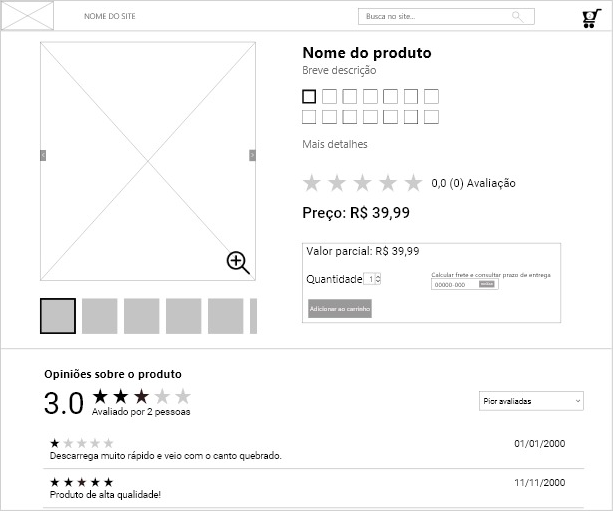

Depoimentos
Exemplo do padrão depoimentos.
Informações
Os usuários desejam obter informações de outros clientes sobre a qualidade do produto/serviço desejado e / ou a confiabilidade do fornecedor.
Permitir que usuários deem feedback sobre a qualidade do produto ou serviços.
Use quando produtos ou serviços forem vendidos on-line no site de comércio eletrônico e quando for difícil fornecer informações objetivas e independentes sobre eles, como fotos, recursos multimídia ou amostras de produtos. Como parte do Shopping, os usuários precisam fazer uma avaliação do produto que, no mundo off-line, seria feito tentando ou inspecionando o produto fisicamente. Essa avaliação é importante para o processo de tomada de decisão.
Da perspectiva do fornecedor, ele também pode ser usado para demonstrar sua benevolência e que você não tem nada a esconder dos seus clientes. Ao permitir que os clientes comentem sobre o produto, outros clientes podem usar as informações em seu processo de tomada de decisão.
Os usuários que também possuem o produto ou que já usaram os serviços oferecidos anteriormente podem escrever uma breve crítica. As revisões são enviadas preenchendo um formulário . A revisão, o nome das revisões e uma classificação serão mostrados na página do produto em uma seção "Revisões do cliente" ou etiqueta semelhante. A própria página da página do produto contém um link ou botão de ação para enviar uma nova revisão.
- Revisão independente: A fim de evitar o uso indevido de comentários, bem como permitir que os usuários para estabelecer uma identidade como um revisor, deve ser obrigatório que os revisores devem fazer login para que eles possam enviar uma revisão. Para que a revisão seja totalmente objetiva, o fornecedor deve colocar a revisão como está e não censurá-la ou editar as revisões, nem deve colocar revisões favoráveis falsas. Caso tais manipulações sejam descobertas e tornadas públicas, os clientes perderão sua confiança nos depoimentos e na empresa. A loja online deve tentar usar críticas negativas como feedback para aprimorar seus serviços e procedimentos comerciais.
- Avaliações de classificação: Como os depoimentos na web são voluntários e geralmente tendem a atrair os usuários mais opinativos, os depoimentos não são inerentemente confiáveis. Uma abordagem possível seria permitir que as pessoas que lêem as revisões indiquem se uma revisão específica foi útil, por exemplo, tendo em vista também a compra do produto e classificando os revisores com base na utilidade percebida de suas revisões. É comum usar alguma metáfora gráfica, como estrelas ou barras, às vezes combinada com classificações numéricas. O benefício dessa abordagem é que outros usuários podem obter uma primeira impressão da classificação imediatamente antes de ler toda a revisão, bem como a oportunidade de permitir algum tipo de comparação básica, além das revisões individuais escritas.
- Mostrando resenhas quando os usuários precisam: Ao implementar uma ferramenta de revisão on-line no site, o fornecedor deve prestar atenção à necessidade do consumidor de poder ler essas análises no momento apropriado e sem nenhum esforço. Ou seja, além de uma Página de produto, as análises de produtos também podem ser disponibilizadas imediatamente, enquanto os usuários pesquisam um produto, análises abreviadas podem aparecer como parte dos Resultados da pesquisa.
Embora muitos usuários que leem as opiniões dos clientes possam reconhecê-los como subjetivos e não confiáveis, geralmente tendem a confiar nas informações de terceiros independentes – nesse caso, outros usuários que são imparciais e insuspeitos de não dizer a verdade – e não nas informações fornecidas pelo (fornecedor on-line desconhecido), que suspeita potencialmente de apresentar informações que atendam apenas aos seus próprios interesses.
Além disso, um recurso de revisão dá aos clientes a impressão de que a loja on-line não tem nada a esconder e quer que eles se comuniquem sobre suas experiências com a loja e seus produtos.